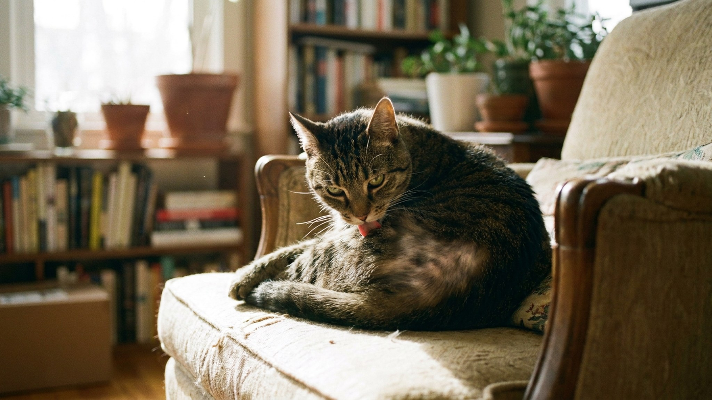

Кошка вылизала залысины на животе и боках: психогенная алопеция и не только

5 июня 2026 · 8 минут чтения · Здоровье · Поведение · Кошки
Залысины на животе, внутренних поверхностях бёдер, боках — один из самых частых поводов для обращения к ветеринару и одновременно один из самых сложных для диагностики. Хозяева, как правило, сразу предполагают стресс. Врачи знают: сначала надо исключить десяток медицинских причин. Психогенная алопеция — диагноз исключения, и ставится он последним.
Почему кошка вылизывает шерсть до залысин
Кошки в норме проводят за грумингом до 30-50% времени бодрствования. Это физиологично. Чрезмерный груминг — overgrooming — это когда кошка вылизывает одни и те же зоны снова и снова, пока не остаётся голая кожа или короткая щетина.
Причин может быть много, и они делятся на два принципиально разных класса: медицинские (физический дискомфорт — зуд, боль, воспаление) и поведенческие (психогенные — тревога, скука, навязчивое поведение). Внешне оба варианта выглядят одинаково. Кошка вылизывает и вылизывает. Разобраться, что происходит внутри, без диагностики невозможно.
Шаг первый: исключить медицинские причины
Около 70-80% случаев overgrooming у кошек имеют медицинскую подоплёку. Психогенная алопеция — редкость, а не правило. Прежде чем говорить о стрессе, врач должен последовательно исключить следующее.
- Блохи и блошиный аллергический дерматит (БАД). Классическая локализация — живот, основание хвоста, внутренняя поверхность бёдер. Кошка может быть чистой внешне: одна блоха, оставив след укуса и слюну, запускает интенсивный зуд на недели. Соскоб кожи и обработка — первый шаг.
- Пищевая аллергия или непереносимость. Проявляется зудом, который кошка снимает вылизыванием. Зоны — живот, бока, шея. Диагностируется только исключающей диетой (8-12 недель на гидролизованном или новом источнике белка).
- Атопический дерматит. Аллергия на факторы окружающей среды — пыль, пыльцу, споры плесени. Часто сезонный.
- Дерматофития (стригущий лишай). Грибковая инфекция с очаговым выпадением шерсти и шелушением. Диагностируется люминесцентной лампой Вуда и посевом.
- Демодекоз или другие паразитарные поражения кожи. Реже, чем у собак, но встречается. Соскоб с кожи.
- Боль. Если кошка вылизывает определённую зону живота или боков — это может быть реакция на боль внутри. Цистит, болезни кишечника, артрит (при вылизывании суставов) — кошки пытаются «лечить» болезненное место грумингом.
- Гипертиреоз. Повышенная функция щитовидной железы вызывает общее беспокойство, кожные изменения и может имитировать психогенное поведение. Анализ крови на T4 обязателен — особенно у кошек старше 7 лет.
Если всё это исключено — тогда разговор переходит к психогенной алопеции.
Психогенная алопеция: что это и как выглядит
Психогенная алопеция (ПА) — это компульсивное вылизывание, возникающее как реакция на хронический стресс, тревогу или скуку. Механизм схож с обсессивно-компульсивными расстройствами у людей: монотонные повторяющиеся действия снижают тревогу, и поведение закрепляется.
Типичные зоны поражения при ПА:
- Живот — самая частая локализация. Широкая симметричная залысина от пупка к паху.
- Внутренняя поверхность бёдер — так называемые «штаны»: голые участки между задними лапами.
- Бока — симметричные залысины с обеих сторон.
- Передние лапы — в тяжёлых случаях кошка вылизывает запястья до сырой кожи.
Важная деталь: при ПА кожа под залысинами обычно выглядит нормально — без покраснений, корок и шелушений. Если кожа воспалена — снова вернитесь к медицинским причинам.
Предрасположенность: по наблюдениям ветеринарных дерматологов, чаще страдают кошки восточных пород — абиссинская, ориентальная, сиамская, бирманская. Но ПА встречается у любой породы.
Что спровоцировало: типичные причины стресса у кошек
Кошки — территориальные животные с очень стабильной нервной системой в привычной среде. Но любое изменение может стать триггером.
- Переезд или ремонт в квартире.
- Появление нового животного или человека (ребёнок, партнёр).
- Потеря знакомого члена семьи или другого животного.
- Изменение графика хозяина: кот привык к присутствию, а теперь оставлен надолго одна.
- Конфликты с другими кошками в многокошачьем доме — включая молчаливые (блокирование доступа к лотку, миске, лежанке).
- Недостаток стимуляции у высокоинтеллектуальной кошки в бедной среде.
Что делает врач на приёме
Диагностика overgrooming — это процесс исключения. Стандартный протокол включает несколько этапов.
- Трихография — исследование волос под микроскопом. По виду сломанных кончиков волос можно сразу сказать: кошка сама вылизывает (механический облом) или шерсть выпадает по другой причине (дистрофия луковицы). Это разграничивает «кошка делает сама» от «шерсть выпадает».
- Соскобы и посевы — на паразиты и грибки.
- Люминесцентная лампа Вуда — для дерматофитии.
- Биохимический анализ крови + T4 — исключить системные заболевания и гипертиреоз.
- Общий анализ крови — эозинофилия может указывать на аллергическую реакцию.
- Исключающая диета — если подозревается пищевая аллергия. Это занимает 8-12 недель.
Только после всего этого, если все анализы в норме, ставится диагноз ПА. И далее лечение направлено уже на коррекцию поведения и среды.
Что меняет хозяин при психогенной алопеции
Лечение ПА — это прежде всего изменение условий жизни кошки. Без этого никакие препараты не дадут стойкого результата.
- Феромоны. Синтетический аналог лицевых феромонов кошки (Feliway Classic) снижает тревогу. Диффузор — в комнату, где кошка проводит больше всего времени. Работает как фоновая поддержка, не как моментальное лечение.
- Обогащение среды. Когтеточки, полки, тоннели, мышки, интерактивные кормушки-головоломки. Кошке нужна активная деятельность. Если она занята — не вылизывается.
- Игровые сессии. Минимум 2 раза в день по 10-15 минут активной игры с удочкой или движущейся игрушкой. Это снижает уровень кортизола и тревогу.
- Устранение триггера. Если известна причина стресса — убрать или минимизировать. Конфликт с другой кошкой требует полного перезапуска знакомства и разделения ресурсов.
- Предсказуемость. Одинаковое время кормления, игр, уборки лотка. Стабильный ритм снижает фоновую тревогу.
Чего не делать при overgrooming
Несколько распространённых ошибок, которые хозяева совершают с лучшими намерениями, но которые замедляют или блокируют решение проблемы.
- Надевать защитный воротник. Конус не даёт кошке вылизываться, и залысины начинают зарастать. Хозяин думает — проблема решена. Но причина осталась. Через неделю после снятия воротника кошка немедленно возобновляет груминг — и часто с большей интенсивностью. Воротник не лечение, а маска.
- Наказывать за вылизывание. Отпугнуть шипением, брызнуть водой, дёрнуть — кошка прекращает при вас, но делает то же самое в ваше отсутствие. Плюс стресс от наказания усиливает тревогу — основной двигатель ПА.
- Менять корм на «лечебный от кожи» без диагностики. Если причина не в пищевой аллергии — смена корма ничего не даст. При этом часто коты отказываются от нового корма, что создаёт дополнительный стресс.
- Срочно покупать второго кота «чтобы было веселее». Новое животное — один из самых мощных триггеров стресса. Если overgrooming вызван тревогой — второй кот сделает хуже, а не лучше. Особенно если введение пройдёт без протокола знакомства.
Когда нужны препараты
Если изменения среды не дали результата за 4-6 недель, врач-ветеринарный поведенщик может назначить медикаментозную поддержку. Это не «закормить таблетками», а временная фармакологическая помощь для перезапуска паттерна.
- Трициклические антидепрессанты (кломипрамин) — снижают компульсивность.
- СИОЗС (флуоксетин) — чаще используется в долгосрочных схемах.
- Габапентин — при выраженной тревоге.
Все препараты назначаются только ветеринарным врачом, курсом 2-4 месяца с постепенной отменой. Самостоятельное назначение — не только бесполезно, но и опасно: дозировки, метаболизм и противопоказания у кошек совершенно иные, чем у людей.
Прогноз при ПА — хороший при устранении триггера и правильном ведении. Шерсть восстанавливается полностью. Часть кошек нуждается в периодической поддерживающей терапии при повторном стрессе.
🐾 Питомец ведёт себя странно?
AnimaLife расшифрует поведение кошки и собаки и подскажет, что делать. Попробуйте бесплатно прямо в мессенджере.
Открыть в Telegram → Открыть в MAX →
🐾 Понравился разбор?
Подпишитесь на канал — каждый день разбираем по одному тревожному симптому у кошек и собак: что в пределах нормы, а когда пора к врачу. Подпишитесь, чтобы не пропустить разбор, который может спасти здоровье вашего питомца.
Как выглядит процесс восстановления шерсти
Один из самых частых вопросов хозяев: «сколько времени пройдёт, пока шерсть отрастёт обратно?» Ответ зависит от глубины повреждения.
Если кошка вылизывала шерсть до щетины (луковица цела) — отрастание занимает 4-8 недель. Если до голой кожи с воспалением — может потребоваться 3-4 месяца. Если кошка успела нанести себе самотравму (ссадины, корочки) — сначала лечится кожа, потом растёт шерсть.
- Первый признак восстановления — появление тонкого пушка на залысинах. Не торопитесь — это хороший знак.
- В период отрастания шерсть может выглядеть неровно и другого оттенка — особенно у тёмных кошек. Это временно.
- Если шерсть не отрастает через 3 месяца после устранения причины — повторный визит к дерматологу. Возможно, есть ещё нераспознанный фактор.
Связь overgrooming и боли: недооценённый фактор
Отдельная тема, которую часто игнорируют — вылизывание как реакция на хроническую боль. Кошки вылизывают не только то место, которое болит снаружи (рана, укус), но и то место, которое проецирует боль изнутри.
Наиболее типичные примеры:
- Хроническая боль в животе (хронический панкреатит, воспалительные заболевания кишечника, цистит) — кошка вылизывает живот.
- Боль в суставах при артрите — вылизывание области суставов.
- Нейропатическая боль (послеоперационная, при диабетической нейропатии) — часто бёдра и задние лапы.
Вот почему при overgrooming, особенно у кошек старше 7 лет, анализ крови с биохимией и общим анализом мочи — не опция, а обязательный шаг. Боль не всегда видна глазом.
Как вести дневник наблюдений
При работе с overgrooming фиксация наблюдений помогает врачу значительно точнее поставить диагноз и отследить эффективность лечения. Хозяевам рекомендуется записывать:
- Когда впервые заметили залысину, размер, локализация.
- Как изменялся размер и площадь за последние недели.
- Что изменилось в доме незадолго до начала (переезд, новое животное, смена корма, изменение расписания хозяина).
- Когда именно кошка вылизывается: ночью, при стрессовых ситуациях, после определённых событий.
- Реакция на применение феромонов (если пробовали).
Эта информация часто становится решающей при дифференциальной диагностике. Особенно если overgrooming сезонный или привязан к конкретным событиям — это сразу указывает на атопию или психогенную причину соответственно.
Итог
Кошка с залысинами от вылизывания — это сигнал, требующий диагностики, а не немедленного вывода «она нервная». Правильный порядок: сначала врач, соскобы, кровь, исключение блох и аллергии. Если всё чисто — тогда работа со средой, феромоны, обогащение и при необходимости поведенческая терапия с vet-специалистом. Шерсть вырастет обратно, если найти и убрать причину. Главное — не ждать, что «само рассосётся». Чем раньше начать диагностику, тем быстрее кошка вернётся в норму.
← Все статьи · Открыть AnimaLife в Telegram · RSS